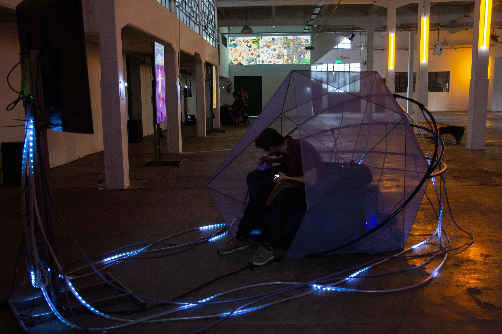
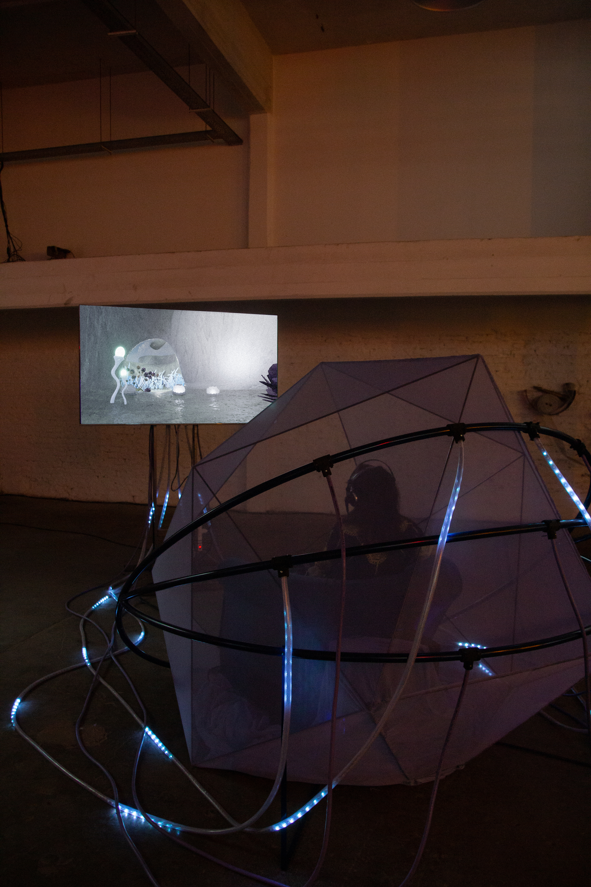
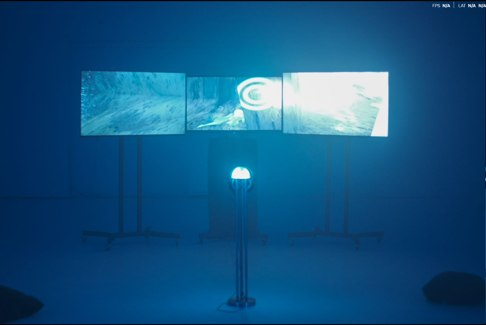
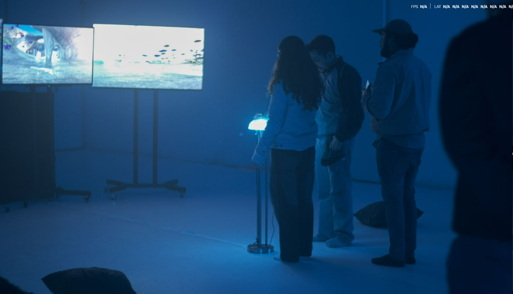
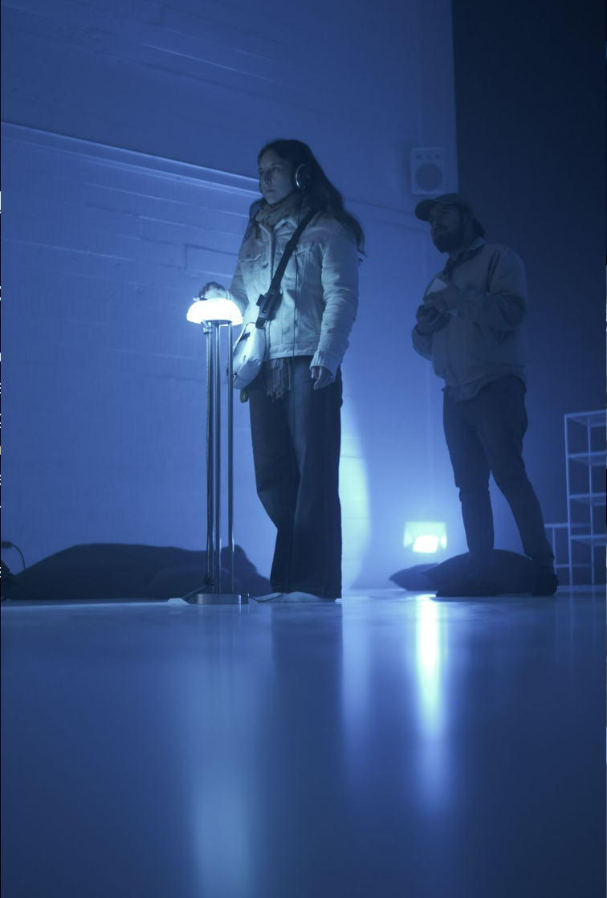

Simulación de lo esencial

Simulación de lo esencial is a virtual aquatic reverie. A video game installation where an aquatic being hatches from an egg and explores a synthetic world—a place that gestures toward nature but can never fully become it.
Through visual and emotional cues, SDLE builds an ambient lore, evoking a dreamlike and nostalgic world. Not a story with a plot, but a sensation that something has happened, or could happen. Water becomes interface. Nature appears as a curated façade. The player inhabits a fictionalized natural world, too harmonious to be real.
The experience echoes YouTube compilations of liminal pools or AI-generated gardens, reflecting a collective longing for “essential” experiences within a hyper-mediated environment. It raises a central question:
The game invites the player to dive into SimulacionDeLoEsencial.exe—to swim through empty yet lush virtual spaces, experiencing beauty designed for emotional effect: clean, slow, peaceful, but always slightly too smooth, too sterile, like a memory that was never yours.
Through visual and emotional cues, SDLE builds an ambient lore, evoking a dreamlike and nostalgic world. Not a story with a plot, but a sensation that something has happened, or could happen. Water becomes interface. Nature appears as a curated façade. The player inhabits a fictionalized natural world, too harmonious to be real.
The experience echoes YouTube compilations of liminal pools or AI-generated gardens, reflecting a collective longing for “essential” experiences within a hyper-mediated environment. It raises a central question:
What does nature look like once filtered through decades of screens?
The game invites the player to dive into SimulacionDeLoEsencial.exe—to swim through empty yet lush virtual spaces, experiencing beauty designed for emotional effect: clean, slow, peaceful, but always slightly too smooth, too sterile, like a memory that was never yours.
Like a memory that was never yours.
This is not a critique of technology but a reflection on entanglement. The player becomes part of the dream machine, a ghost moving through lush renders, searching for something real in the artificial, and perhaps never finding it.
"I felt the vertigo of technology changing my soul. I am like a ghost in a dream machine. I just want to go back to my water roots." — SimulacionDeLoEsencial.Intro
From the time we have inhabited the watery environment until now, nature consists in mutating, but we still represent the nature by a romantic idea of peace and durability. This installative videogame brings us closer to the idea of representation and interaction of nature from a superficial and aestheticized place.
Exhibition “No existe tierra más allá ”
Chela. Buenos Aires Argentina.

From abstraction to an aquatic world, this installation invites us to think about classic dichotomies that continue to fill everyday life with contradictions, despite being widely discussed in different spheres.
The idea that we have about the artificial is disarmed when we try to define it, just as the natural environment is totally raversed by cybernetics, yet we continue to exalt a romantic and modern idea of a romantic and modern idea of a nature that we never live with,but which we turn into a symbol.
Our environment presents itself as a hybrid for the artificial concept, but in truth it is our human nature that is at play between the manipulation of the environment and the body's adaptation to it. From the time we have inhabited the watery environment until now, nature consists in mutating.
The installation proposes a place to play, a specific place to immerse oneself in an abstract and virtual world.
At the same time, to play in order to think, in the constant exercise of exploiting contradictions and disarming them.
Text: Merlina Rañi
The idea that we have about the artificial is disarmed when we try to define it, just as the natural environment is totally raversed by cybernetics, yet we continue to exalt a romantic and modern idea of a romantic and modern idea of a nature that we never live with,but which we turn into a symbol.
Our environment presents itself as a hybrid for the artificial concept, but in truth it is our human nature that is at play between the manipulation of the environment and the body's adaptation to it. From the time we have inhabited the watery environment until now, nature consists in mutating.
The installation proposes a place to play, a specific place to immerse oneself in an abstract and virtual world.
At the same time, to play in order to think, in the constant exercise of exploiting contradictions and disarming them.
Text: Merlina Rañi
SDLE as part of solo show in Centro Nave, Chile. June 2023


